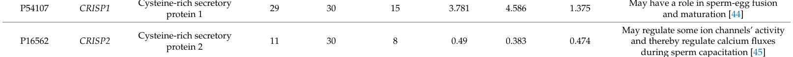

Cysteine-rich secretory protein 2 (CRISP2) is a testis-specific secretory protein that plays critical roles in male reproductive biology. It is incorporated into developing sperm during spermatogenesis and localizes primarily to the acrosome (particularly the equatorial segment), flagellum, and cytoplasmic droplet of mature sperm. CRISP2 functions as an ion channel regulator, particularly modulating calcium flux during sperm capacitation (including ryanodine receptor-mediated Ca2+ release), and is involved in the acrosome reaction and fertilization processes. The protein contains characteristic CAP and cysteine-rich (ShKT/CRISP) domains that mediate protein-protein interactions and ion channel regulation; recent biochemical evidence shows the CAP domain also binds sterols (e.g., cholesterol sulfate) and mediates sterol export, an activity inhibited by A1BG binding.
| GO Term | Evidence | Action | Reason |
|---|---|---|---|
|
GO:0005615
extracellular space
|
IBA
GO_REF:0000033 |
ACCEPT |
Summary: CRISP2 is a secretory protein that is released into extracellular space. The IBA annotation is based on phylogenetic inference across the CRISP family, which are characterized as secreted proteins.
Reason: The annotation is correct and well-supported. CRISP2 contains a signal peptide (residues 1-21) and is annotated as "Secreted" in UniProt. The deep research confirms CRISP2 "is predicted to be active in the extracellular space, consistent with its secretory nature" and localizes to the acrosome and flagellum of sperm cells, which are extracellular compartments. The IBA evidence provides strong phylogenetic support across orthologous CRISP family members.
Supporting Evidence:
PMID:8665901
CRISP-2/TPX1 transcripts are...detected mainly in the testis and also in the epididymis
file:human/CRISP2/CRISP2-deep-research-perplexity-lite.md
CRISP2 is primarily localized to the acrosome and flagellum of sperm cells. It is predicted to be active in the extracellular space, consistent with its secretory nature
file:human/CRISP2/CRISP2-uniprot.txt
SUBCELLULAR LOCATION: Secreted
file:human/CRISP2/CRISP2-deep-research-falcon.md
In ejaculated sperm, CRISP2 is reported in the **cytoplasmic droplet**, **flagellum**, and **EqS**, consistent with roles in motility and gamete fusion
|
|
GO:0005576
extracellular region
|
IEA
GO_REF:0000120 |
ACCEPT |
Summary: This is a broad extracellular localization term assigned by automated evidence based on InterPro domain signatures and UniProt subcellular location annotation.
Reason: The annotation is correct as CRISP2 is a secreted protein found in extracellular regions. While GO:0005615 (extracellular space) is more specific, GO:0005576 (extracellular region) is also accurate and represents a valid parent term. The IEA annotation is appropriately conservative, providing broad localization information based on sequence features and subcellular location keywords. Having both the specific term (GO:0005615) and broader term (GO:0005576) is acceptable and provides complete annotation coverage.
Supporting Evidence:
GO_REF:0000120
Combined Automated Annotation using Multiple IEA Methods based on InterPro:IPR018244 and UniProtKB-SubCell:SL-0243
file:human/CRISP2/CRISP2-uniprot.txt
SUBCELLULAR LOCATION: Secreted
file:human/CRISP2/CRISP2-deep-research-falcon.md
CRISPs as typically **two-domain proteins** comprising an N-terminal **CAP domain** plus a C-terminal **cysteine-rich CRISP domain**
|
|
GO:0005615
extracellular space
|
TAS
PMID:8665901 The human cysteine-rich secretory protein (CRISP) family. Pr... |
ACCEPT |
Summary: This annotation is supported by the foundational characterization paper for the human CRISP family by Kraetzschmar et al. 1996, which described CRISP2 tissue distribution and confirmed it as a secreted protein.
Reason: The TAS (Traceable Author Statement) annotation is well-founded. PMID:8665901 is the seminal paper characterizing CRISP2 (referred to as TPX1 in that work) as a secretory protein with testis and epididymis expression. The paper states "CRISP-2 cDNA corresponds to the previously described TPX1 form" and describes tissue distribution indicating secretory nature. While the abstract does not explicitly state "extracellular space," the characterization of CRISP proteins as secretory proteins with cysteine-rich domains supports extracellular localization. This represents core literature-based evidence for CRISP2 localization.
Supporting Evidence:
PMID:8665901
CRISP-2/TPX1 transcripts are...detected mainly in the testis and also in the epididymis... We report the isolation and characterisation of cDNAs encoding three different, human members of the cysteine-rich secretory protein (CRISP) family.
file:human/CRISP2/CRISP2-deep-research-falcon.md
In human epididymis, CRISP2 staining is observed in sperm within the lumen (including a dense spot at the basal head region and along the flagellum), while the epididymal epithelium is negative
|
|
GO:0005246
calcium channel regulator activity
|
NAS | NEW |
Summary: Added to align core_functions with existing annotations.
Reason: Core function term not present in existing_annotations.
Supporting Evidence:
file:human/CRISP2/CRISP2-uniprot.txt
May regulate some ion channels' activity and thereby regulate calcium fluxes during sperm capacitation.
file:human/CRISP2/CRISP2-deep-research-perplexity-lite.md
CRISP2 is predicted to regulate the activity of certain ion channels, particularly those involved in calcium fluxes during sperm capacitation, a process essential for fertilization
file:human/CRISP2/CRISP2-deep-research-perplexity-lite.md
CRISP2 is involved in the acrosome reaction, a key step in fertilization where the sperm releases enzymes to penetrate the egg
file:human/CRISP2/CRISP2-deep-research-perplexity-lite.md
CRISP2 is primarily localized to the acrosome and flagellum of sperm cells
file:human/CRISP2/CRISP2-deep-research-falcon.md
Review-level synthesis places CRISP2 in sperm Ca2+ signaling through **ryanodine receptor (RyR)-mediated Ca2+ release** and broader ion-channel modulation
file:human/CRISP2/CRISP2-deep-research-falcon.md
A 2023 ejaculate-based shotgun proteomics study explicitly annotates CRISP2 as potentially regulating **ion channels** and thereby **calcium fluxes during sperm capacitation**
|
|
GO:0001669
acrosomal vesicle
|
NAS | NEW |
Summary: Added to align core_functions with existing annotations.
Reason: Core function term not present in existing_annotations.
Supporting Evidence:
file:human/CRISP2/CRISP2-uniprot.txt
May regulate some ion channels' activity and thereby regulate calcium fluxes during sperm capacitation.
file:human/CRISP2/CRISP2-deep-research-perplexity-lite.md
CRISP2 is predicted to regulate the activity of certain ion channels, particularly those involved in calcium fluxes during sperm capacitation, a process essential for fertilization
file:human/CRISP2/CRISP2-deep-research-perplexity-lite.md
CRISP2 is involved in the acrosome reaction, a key step in fertilization where the sperm releases enzymes to penetrate the egg
file:human/CRISP2/CRISP2-deep-research-perplexity-lite.md
CRISP2 is primarily localized to the acrosome and flagellum of sperm cells
file:human/CRISP2/CRISP2-deep-research-falcon.md
Late elongated spermatids:** CRISP2 also seen in the **flagellum** and the **equatorial segment (EqS)** of the acrosome
file:human/CRISP2/CRISP2-deep-research-falcon.md
In ejaculated sperm, CRISP2 is reported in the **cytoplasmic droplet**, **flagellum**, and **EqS**, consistent with roles in motility and gamete fusion
|
|
GO:0048240
sperm capacitation
|
NAS | NEW |
Summary: Added to align core_functions with existing annotations.
Reason: Core function term not present in existing_annotations.
Supporting Evidence:
file:human/CRISP2/CRISP2-uniprot.txt
May regulate some ion channels' activity and thereby regulate calcium fluxes during sperm capacitation.
file:human/CRISP2/CRISP2-deep-research-perplexity-lite.md
CRISP2 is predicted to regulate the activity of certain ion channels, particularly those involved in calcium fluxes during sperm capacitation, a process essential for fertilization
file:human/CRISP2/CRISP2-deep-research-perplexity-lite.md
CRISP2 is involved in the acrosome reaction, a key step in fertilization where the sperm releases enzymes to penetrate the egg
file:human/CRISP2/CRISP2-deep-research-perplexity-lite.md
CRISP2 is primarily localized to the acrosome and flagellum of sperm cells
file:human/CRISP2/CRISP2-deep-research-falcon.md
A 2023 ejaculate-based shotgun proteomics study explicitly annotates CRISP2 as potentially regulating **ion channels** and thereby **calcium fluxes during sperm capacitation**
|
|
GO:0007340
acrosome reaction
|
NAS | NEW |
Summary: Added to align core_functions with existing annotations.
Reason: Core function term not present in existing_annotations.
Supporting Evidence:
file:human/CRISP2/CRISP2-uniprot.txt
May regulate some ion channels' activity and thereby regulate calcium fluxes during sperm capacitation.
file:human/CRISP2/CRISP2-deep-research-perplexity-lite.md
CRISP2 is predicted to regulate the activity of certain ion channels, particularly those involved in calcium fluxes during sperm capacitation, a process essential for fertilization
file:human/CRISP2/CRISP2-deep-research-perplexity-lite.md
CRISP2 is involved in the acrosome reaction, a key step in fertilization where the sperm releases enzymes to penetrate the egg
file:human/CRISP2/CRISP2-deep-research-perplexity-lite.md
CRISP2 is primarily localized to the acrosome and flagellum of sperm cells
file:human/CRISP2/CRISP2-deep-research-falcon.md
Late elongated spermatids:** CRISP2 also seen in the **flagellum** and the **equatorial segment (EqS)** of the acrosome
|
|
GO:0032934
sterol binding
|
NAS | NEW |
Summary: Added based on 2024 biochemical evidence that the CRISP2 CAP domain binds cholesterol sulfate and mediates sterol export in a yeast assay; activity is inhibited by A1BG binding in a Mg2+-dependent manner.
Reason: Novel mechanistic activity supported by PMID:39433128 (El Atab et al. 2024, J Biol Chem) demonstrating direct sterol binding via the CAP domain. This activity is not in current GOA but represents a credible biochemical function from a domain-leading peer-reviewed journal.
Supporting Evidence:
PMID:39433128
Alpha-1-b glycoprotein (a1bg) inhibits sterol-binding and export by crisp2
file:human/CRISP2/CRISP2-deep-research-falcon.md
biochemical evidence that CRISP2 participates in **sterol binding and sterol export** in a yeast-based functional model and that this activity can be strongly regulated by A1BG
file:human/CRISP2/CRISP2-deep-research-falcon.md
Coexpression of A1BG with CRISP2 (or related CAP proteins) reduced sterol secretion by **>50%** in vivo (yeast export assay)
|
The research report should be a detailed narrative explaining the function, biological processes, and localization of the gene product. Citations should be given for all claims.
You should prioritize authoritative reviews and primary scientific literature when conducting research. You can supplement
this with annotations you find in gene/protein databases, but these can be outdated or inaccurate.
We are specifically interested in the primary function of the gene - for enzymes, what reaction is catalyzed, and what is the substrate specificity? For transporters, what is the substrate? For structural proteins or adapters, what is the broader structural role? For signaling molecules, what is the role in the pathway.
We are interested in where in or outside the cell the gene product carries out its function.
We are also interested in the signaling or biochemical pathways in which the gene functions. We are less interested in broad pleiotropic effects, except where these elucidate the precise role.
Include evidence where possible. We are interested in both experimental evidence as well as inference from structure, evolution, or bioinformatic analysis. Precise studies should be prioritized over high-throughput, where available.
The requested target—human CRISP2 (cysteine-rich secretory protein 2; CRISP-2; TPX-1/TPX1; CT36)—is correctly matched to UniProt accession P16562. A human sperm study explicitly maps mass-spectrometry peptides onto the two UniProt isoforms P16562-1 and P16562-2, confirming that the reviewed literature is aligned to the same protein identity (masai2025novelinsightsinto pages 11-11, masai2025novelinsightsinto pages 14-15). Reported aliases in the human study include TPX1 and AA1 (masai2025novelinsightsinto pages 38-40), consistent with the provided UniProt description.
CRISP2 belongs to the CRISP family within the broader CAP superfamily (also called SCP/PR-1/Antigen 5). Authoritative reviews define CRISPs as typically two-domain proteins comprising an N-terminal CAP domain plus a C-terminal cysteine-rich CRISP domain (CRD/ICR + hinge) stabilized by multiple disulfide bonds; the N-terminal CAP domain is often implicated in protein–protein/cell–cell interactions in reproduction, while the C-terminal CRISP domain has been linked to ion-channel regulatory activity (gibbs2008thecapsuperfamily pages 4-4, gibbs2008thecapsuperfamily pages 3-4, gibbs2008thecapsuperfamily pages 4-5).
CRISP2 is best understood as a non-enzymatic structural/interaction protein in sperm biology rather than a metabolic enzyme: it is positioned in reviews as a reproductive tract–associated CAP/CRISP protein implicated in sperm development, capacitation-associated signaling, and gamete interaction, with proposed ion-channel/Ca2+ modulation roles (gibbs2008thecapsuperfamily pages 17-17, gibbs2008thecapsuperfamily pages 18-19).
An authoritative review notes CRISP2 is produced during spermatogenesis and localizes to key sperm compartments (acrosome, accessory tail structures, developing germ-cell membrane) (gibbs2008thecapsuperfamily pages 17-17). A recent human-focused primary study further refines this with direct tissue imaging and biochemical characterization (masai2025novelinsightsinto pages 1-1).
In human testis sections, immunostaining shows CRISP2 signal across germ-cell stages:
- Primary spermatocytes: faint nuclear puncta.
- Round spermatids: more intense, homogeneous nuclear signal.
- Early elongated spermatids: intense nuclear spots with additional cytoplasmic signal.
- Late elongated spermatids: CRISP2 also seen in the flagellum and the equatorial segment (EqS) of the acrosome; late nuclei may appear negative, possibly reflecting chromatin condensation.
These observations were supported by antibody controls and confocal imaging (masai2025novelinsightsinto pages 6-7, masai2025novelinsightsinto pages 7-8).
In human epididymis, CRISP2 staining is observed in sperm within the lumen (including a dense spot at the basal head region and along the flagellum), while the epididymal epithelium is negative (masai2025novelinsightsinto pages 5-6). In ejaculated sperm, CRISP2 is reported in the cytoplasmic droplet, flagellum, and EqS, consistent with roles in motility and gamete fusion (masai2025novelinsightsinto pages 1-1).
Review-level synthesis places CRISP2 in sperm Ca2+ signaling through ryanodine receptor (RyR)-mediated Ca2+ release and broader ion-channel modulation (gibbs2008thecapsuperfamily pages 17-17, gibbs2008thecapsuperfamily pages 18-19). A 2023 ejaculate-based shotgun proteomics study explicitly annotates CRISP2 as potentially regulating ion channels and thereby calcium fluxes during sperm capacitation (shkrigunov2023theapplicationof pages 8-9).
A major 2024 development is biochemical evidence that CRISP2 participates in sterol binding and sterol export in a yeast-based functional model and that this activity can be strongly regulated by A1BG:
- Binding partner/regulator: Human A1BG binds CRISP2 with high affinity (MST Kd values reported around 13.72 ± 2.5 nM; also ~10.3 ± 2.4 nM under Mg2+ conditions) (atab2024alpha1bglycoprotein(a1bg) pages 2-4, atab2024alpha1bglycoprotein(a1bg) pages 12-13).
- Functional inhibition: Coexpression of A1BG with CRISP2 (or related CAP proteins) reduced sterol secretion by >50% in vivo (yeast export assay) (atab2024alpha1bglycoprotein(a1bg) pages 2-4, atab2024alpha1bglycoprotein(a1bg) pages 1-2).
- Ligand binding: CRISP2 binds cholesterol sulfate with reported Kd values ranging from low micromolar to nanomolar depending on assay conditions; binding is blocked by A1BG (atab2024alpha1bglycoprotein(a1bg) pages 2-4, atab2024alpha1bglycoprotein(a1bg) pages 12-13, atab2024alpha1bglycoprotein(a1bg) pages 9-11).
- Cation dependence: The A1BG–CRISP2 interaction is Mg2+-dependent; Zn2+ cannot substitute in restoring binding after EDTA chelation (atab2024alpha1bglycoprotein(a1bg) pages 11-12, atab2024alpha1bglycoprotein(a1bg) pages 12-13).
Mechanistically, these findings reinforce the CAP-domain concept of ligand binding and extend CRISP2 beyond purely “ion-channel regulator” framing toward lipid/sterol handling that may be relevant in reproductive tract fluids and sperm membranes (atab2024alpha1bglycoprotein(a1bg) pages 1-2, atab2024alpha1bglycoprotein(a1bg) pages 2-4).
A 2023 study evaluating ejaculate-based shotgun proteomics quantified CRISP2 (P16562) across ejaculate, seminal plasma, and spermatozoa:
- Validated unique peptides: ejaculate 11; plasma 30; spermatozoa 8.
- NSAF (spectrum counting): ejaculate 0.49; plasma 0.383; spermatozoa 0.474.
The same source summarizes CRISP2 as potentially regulating ion-channel activity and Ca2+ flux during capacitation (shkrigunov2023theapplicationof pages 8-9). A table image excerpt corroborates these values (shkrigunov2023theapplicationof media 5dc187ee).
A 2024 Frontiers in Endocrinology review compiling clinical miRNA studies summarizes that:
- miR-27b is reported upregulated in a semen-based comparison (n=24 vs 24) and is listed as targeting CRISP2, associated with effects on sperm morphology and progressive motility (shi2024micrornasinspermatogenesis pages 3-4).
- The review also states that high miR-27b expression is associated with reduced progressive motility and shows a negative association with CRISP2 protein levels (shi2024micrornasinspermatogenesis pages 4-5).
Evidence in the review is largely summarized (often without effect sizes in table form), so the quantitative strength of these associations depends on the original primary studies (shi2024micrornasinspermatogenesis pages 4-5, shi2024micrornasinspermatogenesis pages 19-20).
A 2024 prospective seminal plasma proteomics study on azoospermia provides clinically relevant statistics (not CRISP2-specific but directly relevant to implementation of testis-derived protein markers):
- Azoospermia affects nearly 2% of men and accounts for 5–20% of male infertility.
- NOA comprises about 90% of azoospermia cases.
- Sperm retrieval success is >90% in obstructive azoospermia but only ~50% in NOA.
This underpins the value of non-invasive seminal plasma protein biomarkers to avoid unnecessary surgery and to triage patients for retrieval attempts (fietz2024proteomicbiomarkersin pages 2-3, fietz2024proteomicbiomarkersin pages 1-2).
CRISP2 is already operationally used as a measured component in high-throughput LC-MS/MS datasets of ejaculate, seminal plasma, and spermatozoa, enabling quantitative comparisons and pathway enrichment in male infertility screening pipelines (shkrigunov2023theapplicationof pages 8-9).
Seminal plasma proteomics is being developed as a non-invasive tool to distinguish OA vs NOA and predict intratesticular sperm presence to rationalize surgery recommendations (fietz2024proteomicbiomarkersin pages 2-3, fietz2024proteomicbiomarkersin pages 1-2). While CRISP2 is not the primary marker highlighted in the pages examined, it is cited among infertility-related proteins in referenced work within this literature context (fietz2024proteomicbiomarkersin pages 12-12).
A 2024 expert review argues that sperm/ejaculate proteomics has substantial potential to improve diagnostics, guide ART, and identify non-hormonal contraceptive targets; however, translation is constrained by the need for reliable, reproducible, affordable assays and extensive validation and regulatory work (parkes2024bringingproteomicsto pages 28-29, parkes2024bringingproteomicsto pages 6-7). The authors highlight a persistent gap between biomarker discovery and clinical adoption and stress the importance of integrating proteomics with clinical phenotypes, genetics, and robust in vivo validation (parkes2024bringingproteomicsto pages 29-31).
| Category | Key points | Evidence type (review/primary/proteomics) | Top citations (pqac-IDs) |
|---|---|---|---|
| Identity/domains | Human CRISP2 is UniProt P16562; recent human sperm work explicitly maps peptides to isoforms P16562-1 and P16562-2. It is a CAP superfamily/CRISP-family protein with an N-terminal CAP domain and a C-terminal cysteine-rich CRISP domain (including hinge/ICR features); the family is linked to ion-channel regulation and reproduction. | Primary + review | (masai2025novelinsightsinto pages 11-11, masai2025novelinsightsinto pages 38-40, gibbs2008thecapsuperfamily pages 3-4, gibbs2008thecapsuperfamily pages 4-4, gibbs2008thecapsuperfamily pages 4-5) |
| Expression | CRISP2 is the mammalian CRISP most tightly associated with testicular germ cells and spermatogenesis. In human tissue, expression is seen through spermatogenic stages and not in epididymal epithelium; in sperm proteomics it is repeatedly detected in ejaculated sperm. | Primary + review + proteomics | (masai2025novelinsightsinto pages 11-12, masai2025novelinsightsinto pages 6-7, masai2025novelinsightsinto pages 12-13, masai2025novelinsightsinto pages 1-1, shkrigunov2023theapplicationof pages 8-9) |
| Subcellular localization | In human testis, hCRISP2 localizes to nuclei of primary spermatocytes, round spermatids, and early elongated spermatids; later also to cytoplasm, flagellum, and equatorial segment. In ejaculated sperm, signal is reported in cytoplasmic droplet, flagellum, equatorial segment, and basal head/connecting-piece regions. Evidence comes from immunofluorescence/confocal z-stacks, antibody controls, western blotting, immunoprecipitation, and MS. | Primary | (masai2025novelinsightsinto pages 6-7, masai2025novelinsightsinto pages 8-9, masai2025novelinsightsinto pages 12-13, masai2025novelinsightsinto pages 1-1, masai2025novelinsightsinto pages 7-8, masai2025novelinsightsinto pages 5-6) |
| Molecular mechanisms | Current understanding supports CRISP2 as a structural/functional sperm protein rather than an enzyme. Review-level evidence places CRISP2 in Ca2+ signaling via regulation of ryanodine receptor-mediated Ca2+ flux and more broadly in ion-channel modulation relevant to motility, capacitation, and acrosome reaction. A 2024 JBC study also shows CRISP2 can bind sterol and mediate sterol export, adding a biochemical activity within the CAP domain framework. | Review + primary | (gibbs2008thecapsuperfamily pages 17-17, gibbs2008thecapsuperfamily pages 18-19, atab2024alpha1bglycoprotein(a1bg) pages 1-2, atab2024alpha1bglycoprotein(a1bg) pages 2-4, atab2024alpha1bglycoprotein(a1bg) pages 9-11) |
| Binding partners/regulators | CRISP2 is reported in sperm protein complexes and has literature-supported interactions with MAP3K11/MLK3 and GGN1; human sperm IP-MS recovered CRISP2 with co-detected proteins including ACR and ACRBP. In 2024, A1BG was shown to bind CRISP2 with high affinity and inhibit its sterol-binding/export activity; interaction requires Mg2+ and maps mainly to A1BG Ig3. | Primary + review + proteomics | (masai2025novelinsightsinto pages 38-40, gibbs2008thecapsuperfamily pages 17-17, atab2024alpha1bglycoprotein(a1bg) pages 1-2, atab2024alpha1bglycoprotein(a1bg) pages 11-12, atab2024alpha1bglycoprotein(a1bg) pages 5-7) |
| Disease/phenotype links | The strongest human disease link is male infertility, especially sperm motility-related phenotypes. Recent review summaries cite miR-27b/miR-27b-3p and miR-509-5p as CRISP2-related regulators in azoospermia/NOA or asthenozoospermia contexts; higher miR-27b is associated with impaired sperm morphology/progressive motility and inverse association with CRISP2 protein. Open Targets currently lists only weak target–disease association evidence for CRISP2 in male infertility. | Review + database | (shi2024micrornasinspermatogenesis pages 9-10, shi2024micrornasinspermatogenesis pages 3-4, shi2024micrornasinspermatogenesis pages 4-5, shi2024micrornasinspermatogenesis pages 19-20, OpenTargets Search: male infertility,asthenozoospermia,azoospermia,infertility-CRISP2) |
| Applications/biomarkers | CRISP2 is already used in sperm/ejaculate proteomics panels as a testis-specific or fertility-relevant protein and is discussed as a candidate biomarker for male infertility screening, though direct clinical implementation remains limited. Its localization and sperm-specificity also keep it of interest as a prospective fertility or contraceptive target. | Proteomics + review | (shkrigunov2023theapplicationof pages 8-9, atab2024alpha1bglycoprotein(a1bg) pages 1-2) |
| Key quantitative data | Human ejaculate proteomics (2023) reported CRISP2 validated unique peptides: ejaculate 11, seminal plasma 30, spermatozoa 8; NSAF values 0.49, 0.383, and 0.474, respectively. In 2024 biochemical studies, A1BG bound CRISP2 with Kd about 13.72 ± 2.5 nM (also ~10.3 ± 2.4 nM under Mg2+ conditions), Ig3 bound with Kd about 13.8 ± 1.14 nM, and A1BG coexpression inhibited CRISP2/Pry-family sterol secretion by >50%; CRISP2 bound cholesterol sulfate with reported Kd values in low micromolar to nanomolar/Mg2+-dependent assay ranges depending on assay conditions. | Proteomics + primary | (shkrigunov2023theapplicationof pages 8-9, atab2024alpha1bglycoprotein(a1bg) pages 11-12, atab2024alpha1bglycoprotein(a1bg) pages 2-4, atab2024alpha1bglycoprotein(a1bg) pages 5-7, atab2024alpha1bglycoprotein(a1bg) pages 12-13) |
Table: This table summarizes the current evidence-based functional annotation of human CRISP2 (UniProt P16562), including identity, localization, mechanisms, fertility links, and quantitative findings. It emphasizes recent 2023-2024 data where available while anchoring claims to authoritative reviews and primary studies.
References
(masai2025novelinsightsinto pages 11-11): Thibault Masai, Amandine Delnatte, Marie Dendievel, Denis Nonclercq, Annica Frau, Jean-François Simon, Vanessa Arcolia, Ruddy Wattiez, Baptiste Leroy, Patricia S Cuasnicu, Pascale Lybaert, and Elise Hennebert. Novel insights into human crisp2: localization in reproductive tissues and sperm, and molecular characterization. Biology of reproduction, 112:1167-1184, Mar 2025. URL: https://doi.org/10.1093/biolre/ioaf051, doi:10.1093/biolre/ioaf051. This article has 1 citations and is from a peer-reviewed journal.
(masai2025novelinsightsinto pages 14-15): Thibault Masai, Amandine Delnatte, Marie Dendievel, Denis Nonclercq, Annica Frau, Jean-François Simon, Vanessa Arcolia, Ruddy Wattiez, Baptiste Leroy, Patricia S Cuasnicu, Pascale Lybaert, and Elise Hennebert. Novel insights into human crisp2: localization in reproductive tissues and sperm, and molecular characterization. Biology of reproduction, 112:1167-1184, Mar 2025. URL: https://doi.org/10.1093/biolre/ioaf051, doi:10.1093/biolre/ioaf051. This article has 1 citations and is from a peer-reviewed journal.
(masai2025novelinsightsinto pages 38-40): Thibault Masai, Amandine Delnatte, Marie Dendievel, Denis Nonclercq, Annica Frau, Jean-François Simon, Vanessa Arcolia, Ruddy Wattiez, Baptiste Leroy, Patricia S Cuasnicu, Pascale Lybaert, and Elise Hennebert. Novel insights into human crisp2: localization in reproductive tissues and sperm, and molecular characterization. Biology of reproduction, 112:1167-1184, Mar 2025. URL: https://doi.org/10.1093/biolre/ioaf051, doi:10.1093/biolre/ioaf051. This article has 1 citations and is from a peer-reviewed journal.
(gibbs2008thecapsuperfamily pages 4-4): Gerard M. Gibbs, Kim Roelants, and Moira K. O'Bryan. The cap superfamily: cysteine-rich secretory proteins, antigen 5, and pathogenesis-related 1 proteins—roles in reproduction, cancer, and immune defense. Endocrine Reviews, 29:865-897, Dec 2008. URL: https://doi.org/10.1210/er.2008-0032, doi:10.1210/er.2008-0032. This article has 615 citations and is from a domain leading peer-reviewed journal.
(gibbs2008thecapsuperfamily pages 3-4): Gerard M. Gibbs, Kim Roelants, and Moira K. O'Bryan. The cap superfamily: cysteine-rich secretory proteins, antigen 5, and pathogenesis-related 1 proteins—roles in reproduction, cancer, and immune defense. Endocrine Reviews, 29:865-897, Dec 2008. URL: https://doi.org/10.1210/er.2008-0032, doi:10.1210/er.2008-0032. This article has 615 citations and is from a domain leading peer-reviewed journal.
(gibbs2008thecapsuperfamily pages 4-5): Gerard M. Gibbs, Kim Roelants, and Moira K. O'Bryan. The cap superfamily: cysteine-rich secretory proteins, antigen 5, and pathogenesis-related 1 proteins—roles in reproduction, cancer, and immune defense. Endocrine Reviews, 29:865-897, Dec 2008. URL: https://doi.org/10.1210/er.2008-0032, doi:10.1210/er.2008-0032. This article has 615 citations and is from a domain leading peer-reviewed journal.
(gibbs2008thecapsuperfamily pages 17-17): Gerard M. Gibbs, Kim Roelants, and Moira K. O'Bryan. The cap superfamily: cysteine-rich secretory proteins, antigen 5, and pathogenesis-related 1 proteins—roles in reproduction, cancer, and immune defense. Endocrine Reviews, 29:865-897, Dec 2008. URL: https://doi.org/10.1210/er.2008-0032, doi:10.1210/er.2008-0032. This article has 615 citations and is from a domain leading peer-reviewed journal.
(gibbs2008thecapsuperfamily pages 18-19): Gerard M. Gibbs, Kim Roelants, and Moira K. O'Bryan. The cap superfamily: cysteine-rich secretory proteins, antigen 5, and pathogenesis-related 1 proteins—roles in reproduction, cancer, and immune defense. Endocrine Reviews, 29:865-897, Dec 2008. URL: https://doi.org/10.1210/er.2008-0032, doi:10.1210/er.2008-0032. This article has 615 citations and is from a domain leading peer-reviewed journal.
(masai2025novelinsightsinto pages 1-1): Thibault Masai, Amandine Delnatte, Marie Dendievel, Denis Nonclercq, Annica Frau, Jean-François Simon, Vanessa Arcolia, Ruddy Wattiez, Baptiste Leroy, Patricia S Cuasnicu, Pascale Lybaert, and Elise Hennebert. Novel insights into human crisp2: localization in reproductive tissues and sperm, and molecular characterization. Biology of reproduction, 112:1167-1184, Mar 2025. URL: https://doi.org/10.1093/biolre/ioaf051, doi:10.1093/biolre/ioaf051. This article has 1 citations and is from a peer-reviewed journal.
(masai2025novelinsightsinto pages 6-7): Thibault Masai, Amandine Delnatte, Marie Dendievel, Denis Nonclercq, Annica Frau, Jean-François Simon, Vanessa Arcolia, Ruddy Wattiez, Baptiste Leroy, Patricia S Cuasnicu, Pascale Lybaert, and Elise Hennebert. Novel insights into human crisp2: localization in reproductive tissues and sperm, and molecular characterization. Biology of reproduction, 112:1167-1184, Mar 2025. URL: https://doi.org/10.1093/biolre/ioaf051, doi:10.1093/biolre/ioaf051. This article has 1 citations and is from a peer-reviewed journal.
(masai2025novelinsightsinto pages 7-8): Thibault Masai, Amandine Delnatte, Marie Dendievel, Denis Nonclercq, Annica Frau, Jean-François Simon, Vanessa Arcolia, Ruddy Wattiez, Baptiste Leroy, Patricia S Cuasnicu, Pascale Lybaert, and Elise Hennebert. Novel insights into human crisp2: localization in reproductive tissues and sperm, and molecular characterization. Biology of reproduction, 112:1167-1184, Mar 2025. URL: https://doi.org/10.1093/biolre/ioaf051, doi:10.1093/biolre/ioaf051. This article has 1 citations and is from a peer-reviewed journal.
(masai2025novelinsightsinto pages 5-6): Thibault Masai, Amandine Delnatte, Marie Dendievel, Denis Nonclercq, Annica Frau, Jean-François Simon, Vanessa Arcolia, Ruddy Wattiez, Baptiste Leroy, Patricia S Cuasnicu, Pascale Lybaert, and Elise Hennebert. Novel insights into human crisp2: localization in reproductive tissues and sperm, and molecular characterization. Biology of reproduction, 112:1167-1184, Mar 2025. URL: https://doi.org/10.1093/biolre/ioaf051, doi:10.1093/biolre/ioaf051. This article has 1 citations and is from a peer-reviewed journal.
(shkrigunov2023theapplicationof pages 8-9): Timur Shkrigunov, Victor Zgoda, Peter Klimenko, Anna Kozlova, Maria Klimenko, Andrey Lisitsa, Mark Kurtser, and Natalia Petushkova. The application of ejaculate-based shotgun proteomics for male infertility screening. Biomedicines, 12:49, Dec 2023. URL: https://doi.org/10.3390/biomedicines12010049, doi:10.3390/biomedicines12010049. This article has 2 citations.
(atab2024alpha1bglycoprotein(a1bg) pages 2-4): Ola El Atab, Barkha Gupta, Zhu Han, Jiri Stribny, Oluwatoyin A. Asojo, and Roger Schneiter. Alpha-1-b glycoprotein (a1bg) inhibits sterol-binding and export by crisp2. Journal of Biological Chemistry, 300:107910, Dec 2024. URL: https://doi.org/10.1016/j.jbc.2024.107910, doi:10.1016/j.jbc.2024.107910. This article has 4 citations and is from a domain leading peer-reviewed journal.
(atab2024alpha1bglycoprotein(a1bg) pages 12-13): Ola El Atab, Barkha Gupta, Zhu Han, Jiri Stribny, Oluwatoyin A. Asojo, and Roger Schneiter. Alpha-1-b glycoprotein (a1bg) inhibits sterol-binding and export by crisp2. Journal of Biological Chemistry, 300:107910, Dec 2024. URL: https://doi.org/10.1016/j.jbc.2024.107910, doi:10.1016/j.jbc.2024.107910. This article has 4 citations and is from a domain leading peer-reviewed journal.
(atab2024alpha1bglycoprotein(a1bg) pages 1-2): Ola El Atab, Barkha Gupta, Zhu Han, Jiri Stribny, Oluwatoyin A. Asojo, and Roger Schneiter. Alpha-1-b glycoprotein (a1bg) inhibits sterol-binding and export by crisp2. Journal of Biological Chemistry, 300:107910, Dec 2024. URL: https://doi.org/10.1016/j.jbc.2024.107910, doi:10.1016/j.jbc.2024.107910. This article has 4 citations and is from a domain leading peer-reviewed journal.
(atab2024alpha1bglycoprotein(a1bg) pages 9-11): Ola El Atab, Barkha Gupta, Zhu Han, Jiri Stribny, Oluwatoyin A. Asojo, and Roger Schneiter. Alpha-1-b glycoprotein (a1bg) inhibits sterol-binding and export by crisp2. Journal of Biological Chemistry, 300:107910, Dec 2024. URL: https://doi.org/10.1016/j.jbc.2024.107910, doi:10.1016/j.jbc.2024.107910. This article has 4 citations and is from a domain leading peer-reviewed journal.
(atab2024alpha1bglycoprotein(a1bg) pages 11-12): Ola El Atab, Barkha Gupta, Zhu Han, Jiri Stribny, Oluwatoyin A. Asojo, and Roger Schneiter. Alpha-1-b glycoprotein (a1bg) inhibits sterol-binding and export by crisp2. Journal of Biological Chemistry, 300:107910, Dec 2024. URL: https://doi.org/10.1016/j.jbc.2024.107910, doi:10.1016/j.jbc.2024.107910. This article has 4 citations and is from a domain leading peer-reviewed journal.
(shkrigunov2023theapplicationof media 5dc187ee): Timur Shkrigunov, Victor Zgoda, Peter Klimenko, Anna Kozlova, Maria Klimenko, Andrey Lisitsa, Mark Kurtser, and Natalia Petushkova. The application of ejaculate-based shotgun proteomics for male infertility screening. Biomedicines, 12:49, Dec 2023. URL: https://doi.org/10.3390/biomedicines12010049, doi:10.3390/biomedicines12010049. This article has 2 citations.
(shi2024micrornasinspermatogenesis pages 3-4): Ziyan Shi, Miao Yu, Tingchao Guo, Yu Sui, Zhiying Tian, Xiang Ni, Xinren Chen, Miao Jiang, Jingyi Jiang, Yongping Lu, and Meina Lin. Micrornas in spermatogenesis dysfunction and male infertility: clinical phenotypes, mechanisms and potential diagnostic biomarkers. Frontiers in Endocrinology, Feb 2024. URL: https://doi.org/10.3389/fendo.2024.1293368, doi:10.3389/fendo.2024.1293368. This article has 56 citations.
(shi2024micrornasinspermatogenesis pages 4-5): Ziyan Shi, Miao Yu, Tingchao Guo, Yu Sui, Zhiying Tian, Xiang Ni, Xinren Chen, Miao Jiang, Jingyi Jiang, Yongping Lu, and Meina Lin. Micrornas in spermatogenesis dysfunction and male infertility: clinical phenotypes, mechanisms and potential diagnostic biomarkers. Frontiers in Endocrinology, Feb 2024. URL: https://doi.org/10.3389/fendo.2024.1293368, doi:10.3389/fendo.2024.1293368. This article has 56 citations.
(shi2024micrornasinspermatogenesis pages 19-20): Ziyan Shi, Miao Yu, Tingchao Guo, Yu Sui, Zhiying Tian, Xiang Ni, Xinren Chen, Miao Jiang, Jingyi Jiang, Yongping Lu, and Meina Lin. Micrornas in spermatogenesis dysfunction and male infertility: clinical phenotypes, mechanisms and potential diagnostic biomarkers. Frontiers in Endocrinology, Feb 2024. URL: https://doi.org/10.3389/fendo.2024.1293368, doi:10.3389/fendo.2024.1293368. This article has 56 citations.
(fietz2024proteomicbiomarkersin pages 2-3): Daniela Fietz, Raouda Sgaier, Liza O’Donnell, Peter G. Stanton, Laura F. Dagley, Andrew I. Webb, Hans-Christian Schuppe, Thorsten Diemer, and Adrian Pilatz. Proteomic biomarkers in seminal plasma as predictors of reproductive potential in azoospermic men. Frontiers in Endocrinology, Apr 2024. URL: https://doi.org/10.3389/fendo.2024.1327800, doi:10.3389/fendo.2024.1327800. This article has 17 citations.
(fietz2024proteomicbiomarkersin pages 1-2): Daniela Fietz, Raouda Sgaier, Liza O’Donnell, Peter G. Stanton, Laura F. Dagley, Andrew I. Webb, Hans-Christian Schuppe, Thorsten Diemer, and Adrian Pilatz. Proteomic biomarkers in seminal plasma as predictors of reproductive potential in azoospermic men. Frontiers in Endocrinology, Apr 2024. URL: https://doi.org/10.3389/fendo.2024.1327800, doi:10.3389/fendo.2024.1327800. This article has 17 citations.
(fietz2024proteomicbiomarkersin pages 12-12): Daniela Fietz, Raouda Sgaier, Liza O’Donnell, Peter G. Stanton, Laura F. Dagley, Andrew I. Webb, Hans-Christian Schuppe, Thorsten Diemer, and Adrian Pilatz. Proteomic biomarkers in seminal plasma as predictors of reproductive potential in azoospermic men. Frontiers in Endocrinology, Apr 2024. URL: https://doi.org/10.3389/fendo.2024.1327800, doi:10.3389/fendo.2024.1327800. This article has 17 citations.
(parkes2024bringingproteomicsto pages 28-29): Rachel Parkes and Thomas X. Garcia. Bringing proteomics to bear on male fertility: key lessons. Expert Review of Proteomics, 21:181-203, Apr 2024. URL: https://doi.org/10.1080/14789450.2024.2327553, doi:10.1080/14789450.2024.2327553. This article has 7 citations and is from a peer-reviewed journal.
(parkes2024bringingproteomicsto pages 6-7): Rachel Parkes and Thomas X. Garcia. Bringing proteomics to bear on male fertility: key lessons. Expert Review of Proteomics, 21:181-203, Apr 2024. URL: https://doi.org/10.1080/14789450.2024.2327553, doi:10.1080/14789450.2024.2327553. This article has 7 citations and is from a peer-reviewed journal.
(parkes2024bringingproteomicsto pages 29-31): Rachel Parkes and Thomas X. Garcia. Bringing proteomics to bear on male fertility: key lessons. Expert Review of Proteomics, 21:181-203, Apr 2024. URL: https://doi.org/10.1080/14789450.2024.2327553, doi:10.1080/14789450.2024.2327553. This article has 7 citations and is from a peer-reviewed journal.
(masai2025novelinsightsinto pages 11-12): Thibault Masai, Amandine Delnatte, Marie Dendievel, Denis Nonclercq, Annica Frau, Jean-François Simon, Vanessa Arcolia, Ruddy Wattiez, Baptiste Leroy, Patricia S Cuasnicu, Pascale Lybaert, and Elise Hennebert. Novel insights into human crisp2: localization in reproductive tissues and sperm, and molecular characterization. Biology of reproduction, 112:1167-1184, Mar 2025. URL: https://doi.org/10.1093/biolre/ioaf051, doi:10.1093/biolre/ioaf051. This article has 1 citations and is from a peer-reviewed journal.
(masai2025novelinsightsinto pages 12-13): Thibault Masai, Amandine Delnatte, Marie Dendievel, Denis Nonclercq, Annica Frau, Jean-François Simon, Vanessa Arcolia, Ruddy Wattiez, Baptiste Leroy, Patricia S Cuasnicu, Pascale Lybaert, and Elise Hennebert. Novel insights into human crisp2: localization in reproductive tissues and sperm, and molecular characterization. Biology of reproduction, 112:1167-1184, Mar 2025. URL: https://doi.org/10.1093/biolre/ioaf051, doi:10.1093/biolre/ioaf051. This article has 1 citations and is from a peer-reviewed journal.
(masai2025novelinsightsinto pages 8-9): Thibault Masai, Amandine Delnatte, Marie Dendievel, Denis Nonclercq, Annica Frau, Jean-François Simon, Vanessa Arcolia, Ruddy Wattiez, Baptiste Leroy, Patricia S Cuasnicu, Pascale Lybaert, and Elise Hennebert. Novel insights into human crisp2: localization in reproductive tissues and sperm, and molecular characterization. Biology of reproduction, 112:1167-1184, Mar 2025. URL: https://doi.org/10.1093/biolre/ioaf051, doi:10.1093/biolre/ioaf051. This article has 1 citations and is from a peer-reviewed journal.
(atab2024alpha1bglycoprotein(a1bg) pages 5-7): Ola El Atab, Barkha Gupta, Zhu Han, Jiri Stribny, Oluwatoyin A. Asojo, and Roger Schneiter. Alpha-1-b glycoprotein (a1bg) inhibits sterol-binding and export by crisp2. Journal of Biological Chemistry, 300:107910, Dec 2024. URL: https://doi.org/10.1016/j.jbc.2024.107910, doi:10.1016/j.jbc.2024.107910. This article has 4 citations and is from a domain leading peer-reviewed journal.
(shi2024micrornasinspermatogenesis pages 9-10): Ziyan Shi, Miao Yu, Tingchao Guo, Yu Sui, Zhiying Tian, Xiang Ni, Xinren Chen, Miao Jiang, Jingyi Jiang, Yongping Lu, and Meina Lin. Micrornas in spermatogenesis dysfunction and male infertility: clinical phenotypes, mechanisms and potential diagnostic biomarkers. Frontiers in Endocrinology, Feb 2024. URL: https://doi.org/10.3389/fendo.2024.1293368, doi:10.3389/fendo.2024.1293368. This article has 56 citations.
(OpenTargets Search: male infertility,asthenozoospermia,azoospermia,infertility-CRISP2): Open Targets Query (male infertility,asthenozoospermia,azoospermia,infertility-CRISP2, 1 results). Buniello, A. et al. (2025). Open Targets Platform: facilitating therapeutic hypotheses building in drug discovery. Nucleic Acids Research.
(gibbs2008thecapsuperfamily pages 1-2): Gerard M. Gibbs, Kim Roelants, and Moira K. O'Bryan. The cap superfamily: cysteine-rich secretory proteins, antigen 5, and pathogenesis-related 1 proteins—roles in reproduction, cancer, and immune defense. Endocrine Reviews, 29:865-897, Dec 2008. URL: https://doi.org/10.1210/er.2008-0032, doi:10.1210/er.2008-0032. This article has 615 citations and is from a domain leading peer-reviewed journal.
(burnett2008crispproteinsand pages 1-2): Lindsey A. Burnett, Xueyu Xiang, Allan L. Bieber, and Douglas E. Chandler. Crisp proteins and sperm chemotaxis: discovery in amphibians and explorations in mammals. The International journal of developmental biology, 52 5-6:489-501, Jan 2008. URL: https://doi.org/10.1387/ijdb.072545lb, doi:10.1387/ijdb.072545lb. This article has 27 citations.

The CRISP2 (Cysteine-Rich Secretory Protein 2) gene encodes a protein primarily involved in male reproductive biology, with key roles in sperm function, ion channel regulation, and potential disease associations, particularly male infertility.
Key Concepts and Definitions
Molecular Function
Biological Processes
Cellular Localization
Protein Domains
Known Interactions
Disease Associations
Recent Developments (2023–2024)
Expert Opinions and Analysis
Relevant Statistics and Data
References (with URLs and Dates)
id: P16562
gene_symbol: CRISP2
product_type: PROTEIN
status: COMPLETE
taxon:
id: NCBITaxon:9606
label: Homo sapiens
description: Cysteine-rich secretory protein 2 (CRISP2) is a testis-specific
secretory protein that plays critical roles in male reproductive biology. It
is incorporated into developing sperm during spermatogenesis and localizes
primarily to the acrosome (particularly the equatorial segment), flagellum,
and cytoplasmic droplet of mature sperm. CRISP2 functions as an ion channel
regulator, particularly modulating calcium flux during sperm capacitation
(including ryanodine receptor-mediated Ca2+ release), and is involved in the
acrosome reaction and fertilization processes. The protein contains
characteristic CAP and cysteine-rich (ShKT/CRISP) domains that mediate
protein-protein interactions and ion channel regulation; recent biochemical
evidence shows the CAP domain also binds sterols (e.g., cholesterol sulfate)
and mediates sterol export, an activity inhibited by A1BG binding.
existing_annotations:
- term:
id: GO:0005615
label: extracellular space
evidence_type: IBA
original_reference_id: GO_REF:0000033
review:
summary: CRISP2 is a secretory protein that is released into extracellular
space. The IBA annotation is based on phylogenetic inference across the
CRISP family, which are characterized as secreted proteins.
action: ACCEPT
reason: The annotation is correct and well-supported. CRISP2 contains a
signal peptide (residues 1-21) and is annotated as "Secreted" in UniProt.
The deep research confirms CRISP2 "is predicted to be active in the
extracellular space, consistent with its secretory nature" and localizes
to the acrosome and flagellum of sperm cells, which are extracellular
compartments. The IBA evidence provides strong phylogenetic support across
orthologous CRISP family members.
proposed_replacement_terms: []
additional_reference_ids:
- PMID:8665901
supported_by:
- reference_id: PMID:8665901
supporting_text: "CRISP-2/TPX1 transcripts are...detected mainly in the testis
and also in the epididymis"
- reference_id: file:human/CRISP2/CRISP2-deep-research-perplexity-lite.md
supporting_text: "CRISP2 is primarily localized to the acrosome and flagellum
of sperm cells. It is predicted to be active in the extracellular space, consistent
with its secretory nature"
- reference_id: file:human/CRISP2/CRISP2-uniprot.txt
supporting_text: "SUBCELLULAR LOCATION: Secreted"
- reference_id: file:human/CRISP2/CRISP2-deep-research-falcon.md
supporting_text: "In ejaculated sperm, CRISP2 is reported in the **cytoplasmic
droplet**, **flagellum**, and **EqS**, consistent with roles in motility and
gamete fusion"
- term:
id: GO:0005576
label: extracellular region
evidence_type: IEA
original_reference_id: GO_REF:0000120
review:
summary: This is a broad extracellular localization term assigned by
automated evidence based on InterPro domain signatures and UniProt
subcellular location annotation.
action: ACCEPT
reason: The annotation is correct as CRISP2 is a secreted protein found in
extracellular regions. While GO:0005615 (extracellular space) is more
specific, GO:0005576 (extracellular region) is also accurate and
represents a valid parent term. The IEA annotation is appropriately
conservative, providing broad localization information based on sequence
features and subcellular location keywords. Having both the specific term
(GO:0005615) and broader term (GO:0005576) is acceptable and provides
complete annotation coverage.
proposed_replacement_terms: []
additional_reference_ids:
- PMID:8665901
supported_by:
- reference_id: GO_REF:0000120
supporting_text: "Combined Automated Annotation using Multiple IEA Methods based
on InterPro:IPR018244 and UniProtKB-SubCell:SL-0243"
- reference_id: file:human/CRISP2/CRISP2-uniprot.txt
supporting_text: "SUBCELLULAR LOCATION: Secreted"
- reference_id: file:human/CRISP2/CRISP2-deep-research-falcon.md
supporting_text: "CRISPs as typically **two-domain proteins** comprising an N-terminal
**CAP domain** plus a C-terminal **cysteine-rich CRISP domain**"
- term:
id: GO:0005615
label: extracellular space
evidence_type: TAS
original_reference_id: PMID:8665901
review:
summary: This annotation is supported by the foundational characterization
paper for the human CRISP family by Kraetzschmar et al. 1996, which
described CRISP2 tissue distribution and confirmed it as a secreted
protein.
action: ACCEPT
reason: The TAS (Traceable Author Statement) annotation is well-founded.
PMID:8665901 is the seminal paper characterizing CRISP2 (referred to as
TPX1 in that work) as a secretory protein with testis and epididymis
expression. The paper states "CRISP-2 cDNA corresponds to the previously
described TPX1 form" and describes tissue distribution indicating
secretory nature. While the abstract does not explicitly state
"extracellular space," the characterization of CRISP proteins as secretory
proteins with cysteine-rich domains supports extracellular localization.
This represents core literature-based evidence for CRISP2 localization.
proposed_replacement_terms: []
additional_reference_ids: []
supported_by:
- reference_id: PMID:8665901
supporting_text: "CRISP-2/TPX1 transcripts are...detected mainly in the testis
and also in the epididymis... We report the isolation and characterisation
of cDNAs encoding three different, human members of the cysteine-rich secretory
protein (CRISP) family."
- reference_id: file:human/CRISP2/CRISP2-deep-research-falcon.md
supporting_text: "In human epididymis, CRISP2 staining is observed in sperm within
the lumen (including a dense spot at the basal head region and along the flagellum),
while the epididymal epithelium is negative"
- term:
id: GO:0005246
label: calcium channel regulator activity
evidence_type: NAS
review:
summary: Added to align core_functions with existing annotations.
action: NEW
reason: Core function term not present in existing_annotations.
supported_by:
- reference_id: file:human/CRISP2/CRISP2-uniprot.txt
supporting_text: "May regulate some ion channels' activity and thereby regulate
calcium fluxes during sperm capacitation."
- reference_id: file:human/CRISP2/CRISP2-deep-research-perplexity-lite.md
supporting_text: "CRISP2 is predicted to regulate the activity of certain ion
channels, particularly those involved in calcium fluxes during sperm capacitation,
a process essential for fertilization"
- reference_id: file:human/CRISP2/CRISP2-deep-research-perplexity-lite.md
supporting_text: "CRISP2 is involved in the acrosome reaction, a key step in
fertilization where the sperm releases enzymes to penetrate the egg"
- reference_id: file:human/CRISP2/CRISP2-deep-research-perplexity-lite.md
supporting_text: "CRISP2 is primarily localized to the acrosome and flagellum
of sperm cells"
- reference_id: file:human/CRISP2/CRISP2-deep-research-falcon.md
supporting_text: "Review-level synthesis places CRISP2 in sperm Ca2+ signaling
through **ryanodine receptor (RyR)-mediated Ca2+ release** and broader ion-channel
modulation"
- reference_id: file:human/CRISP2/CRISP2-deep-research-falcon.md
supporting_text: "A 2023 ejaculate-based shotgun proteomics study explicitly
annotates CRISP2 as potentially regulating **ion channels** and thereby **calcium
fluxes during sperm capacitation**"
- term:
id: GO:0001669
label: acrosomal vesicle
evidence_type: NAS
review:
summary: Added to align core_functions with existing annotations.
action: NEW
reason: Core function term not present in existing_annotations.
supported_by:
- reference_id: file:human/CRISP2/CRISP2-uniprot.txt
supporting_text: "May regulate some ion channels' activity and thereby regulate
calcium fluxes during sperm capacitation."
- reference_id: file:human/CRISP2/CRISP2-deep-research-perplexity-lite.md
supporting_text: "CRISP2 is predicted to regulate the activity of certain ion
channels, particularly those involved in calcium fluxes during sperm capacitation,
a process essential for fertilization"
- reference_id: file:human/CRISP2/CRISP2-deep-research-perplexity-lite.md
supporting_text: "CRISP2 is involved in the acrosome reaction, a key step in
fertilization where the sperm releases enzymes to penetrate the egg"
- reference_id: file:human/CRISP2/CRISP2-deep-research-perplexity-lite.md
supporting_text: "CRISP2 is primarily localized to the acrosome and flagellum
of sperm cells"
- reference_id: file:human/CRISP2/CRISP2-deep-research-falcon.md
supporting_text: "Late elongated spermatids:** CRISP2 also seen in the **flagellum**
and the **equatorial segment (EqS)** of the acrosome"
- reference_id: file:human/CRISP2/CRISP2-deep-research-falcon.md
supporting_text: "In ejaculated sperm, CRISP2 is reported in the **cytoplasmic
droplet**, **flagellum**, and **EqS**, consistent with roles in motility and
gamete fusion"
- term:
id: GO:0048240
label: sperm capacitation
evidence_type: NAS
review:
summary: Added to align core_functions with existing annotations.
action: NEW
reason: Core function term not present in existing_annotations.
supported_by:
- reference_id: file:human/CRISP2/CRISP2-uniprot.txt
supporting_text: "May regulate some ion channels' activity and thereby regulate
calcium fluxes during sperm capacitation."
- reference_id: file:human/CRISP2/CRISP2-deep-research-perplexity-lite.md
supporting_text: "CRISP2 is predicted to regulate the activity of certain ion
channels, particularly those involved in calcium fluxes during sperm capacitation,
a process essential for fertilization"
- reference_id: file:human/CRISP2/CRISP2-deep-research-perplexity-lite.md
supporting_text: "CRISP2 is involved in the acrosome reaction, a key step in
fertilization where the sperm releases enzymes to penetrate the egg"
- reference_id: file:human/CRISP2/CRISP2-deep-research-perplexity-lite.md
supporting_text: "CRISP2 is primarily localized to the acrosome and flagellum
of sperm cells"
- reference_id: file:human/CRISP2/CRISP2-deep-research-falcon.md
supporting_text: "A 2023 ejaculate-based shotgun proteomics study explicitly
annotates CRISP2 as potentially regulating **ion channels** and thereby **calcium
fluxes during sperm capacitation**"
- term:
id: GO:0007340
label: acrosome reaction
evidence_type: NAS
review:
summary: Added to align core_functions with existing annotations.
action: NEW
reason: Core function term not present in existing_annotations.
supported_by:
- reference_id: file:human/CRISP2/CRISP2-uniprot.txt
supporting_text: "May regulate some ion channels' activity and thereby regulate
calcium fluxes during sperm capacitation."
- reference_id: file:human/CRISP2/CRISP2-deep-research-perplexity-lite.md
supporting_text: "CRISP2 is predicted to regulate the activity of certain ion
channels, particularly those involved in calcium fluxes during sperm capacitation,
a process essential for fertilization"
- reference_id: file:human/CRISP2/CRISP2-deep-research-perplexity-lite.md
supporting_text: "CRISP2 is involved in the acrosome reaction, a key step in
fertilization where the sperm releases enzymes to penetrate the egg"
- reference_id: file:human/CRISP2/CRISP2-deep-research-perplexity-lite.md
supporting_text: "CRISP2 is primarily localized to the acrosome and flagellum
of sperm cells"
- reference_id: file:human/CRISP2/CRISP2-deep-research-falcon.md
supporting_text: "Late elongated spermatids:** CRISP2 also seen in the **flagellum**
and the **equatorial segment (EqS)** of the acrosome"
- term:
id: GO:0032934
label: sterol binding
evidence_type: NAS
review:
summary: Added based on 2024 biochemical evidence that the CRISP2 CAP domain binds
cholesterol sulfate and mediates sterol export in a yeast assay; activity is
inhibited by A1BG binding in a Mg2+-dependent manner.
action: NEW
reason: Novel mechanistic activity supported by PMID:39433128 (El Atab et al.
2024, J Biol Chem) demonstrating direct sterol binding via the CAP domain. This
activity is not in current GOA but represents a credible biochemical function
from a domain-leading peer-reviewed journal.
supported_by:
- reference_id: PMID:39433128
supporting_text: "Alpha-1-b glycoprotein (a1bg) inhibits sterol-binding and
export by crisp2"
- reference_id: file:human/CRISP2/CRISP2-deep-research-falcon.md
supporting_text: "biochemical evidence that CRISP2 participates in **sterol
binding and sterol export** in a yeast-based functional model and that this
activity can be strongly regulated by A1BG"
- reference_id: file:human/CRISP2/CRISP2-deep-research-falcon.md
supporting_text: "Coexpression of A1BG with CRISP2 (or related CAP proteins)
reduced sterol secretion by **>50%** in vivo (yeast export assay)"
core_functions:
- description: Regulating calcium channel activity in the extracellular region to
control calcium flux during sperm capacitation and the acrosome reaction
supported_by:
- reference_id: file:human/CRISP2/CRISP2-uniprot.txt
supporting_text: "May regulate some ion channels' activity and thereby regulate
calcium fluxes during sperm capacitation."
- reference_id: file:human/CRISP2/CRISP2-deep-research-perplexity-lite.md
supporting_text: "CRISP2 is predicted to regulate the activity of certain ion
channels, particularly those involved in calcium fluxes during sperm capacitation,
a process essential for fertilization"
- reference_id: file:human/CRISP2/CRISP2-deep-research-perplexity-lite.md
supporting_text: "CRISP2 is involved in the acrosome reaction, a key step in fertilization
where the sperm releases enzymes to penetrate the egg"
- reference_id: file:human/CRISP2/CRISP2-deep-research-perplexity-lite.md
supporting_text: "CRISP2 is primarily localized to the acrosome and flagellum
of sperm cells"
- reference_id: file:human/CRISP2/CRISP2-deep-research-falcon.md
supporting_text: "Review-level synthesis places CRISP2 in sperm Ca2+ signaling
through **ryanodine receptor (RyR)-mediated Ca2+ release** and broader ion-channel
modulation"
molecular_function:
id: GO:0005246
label: calcium channel regulator activity
directly_involved_in:
- id: GO:0048240
label: sperm capacitation
- id: GO:0007340
label: acrosome reaction
locations:
- id: GO:0005576
label: extracellular region
- id: GO:0001669
label: acrosomal vesicle
anatomical_locations:
- id: UBERON:0000473
label: testis
- description: Binding sterols (including cholesterol sulfate) via the CAP domain
and mediating sterol export; this activity is inhibited by A1BG binding in a Mg2+-dependent
manner. This biochemical activity was demonstrated heterologously in a yeast sterol-export
model and provides a mechanistic basis for CRISP2 in lipid handling within reproductive
tract fluids and sperm membranes.
supported_by:
- reference_id: file:human/CRISP2/CRISP2-deep-research-falcon.md
supporting_text: "biochemical evidence that CRISP2 participates in **sterol binding
and sterol export** in a yeast-based functional model and that this activity
can be strongly regulated by A1BG"
- reference_id: file:human/CRISP2/CRISP2-deep-research-falcon.md
supporting_text: "Coexpression of A1BG with CRISP2 (or related CAP proteins) reduced
sterol secretion by **>50%** in vivo (yeast export assay)"
- reference_id: PMID:39433128
supporting_text: "Alpha-1-b glycoprotein (a1bg) inhibits sterol-binding and export
by crisp2"
molecular_function:
id: GO:0032934
label: sterol binding
locations:
- id: GO:0005576
label: extracellular region
references:
- id: GO_REF:0000033
title: Annotation inferences using phylogenetic trees
findings:
- statement: Phylogenetic inference supporting CRISP2 localization to
extracellular space based on orthologous CRISP family members
- id: GO_REF:0000120
title: Combined Automated Annotation using Multiple IEA Methods.
findings:
- statement: Automated annotation based on InterPro domain signatures
(IPR018244) and UniProt subcellular location keyword (SL-0243) supporting
secreted/extracellular localization
- id: PMID:8665901
title: The human cysteine-rich secretory protein (CRISP) family. Primary
structure and tissue distribution of CRISP-1, CRISP-2 and CRISP-3.
findings:
- statement: First comprehensive characterization of human CRISP2 (TPX1)
showing testis and epididymis-specific expression
supporting_text: "CRISP-2/TPX1 transcripts are detected mainly in the testis and
also in the epididymis"
- statement: Established CRISP2 as member of cysteine-rich secretory protein
family
supporting_text: "We report the isolation and characterisation of cDNAs encoding
three different, human members of the cysteine-rich secretory protein (CRISP)
family... CRISP-2 cDNA corresponds to the previously described TPX1 form"
- statement: Described tissue distribution patterns consistent with role in
male reproduction
supporting_text: "Northern blot analysis of various human organs indicates that
CRISP-1 transcripts are epididymis-specific whereas CRISP-2/TPX1 transcripts
are detected mainly in the testis and also in the epididymis"
- id: file:human/CRISP2/CRISP2-deep-research-perplexity-lite.md
title: Deep research summary on CRISP2 gene function and biology
findings:
- statement: CRISP2 localizes to acrosome and flagellum of sperm cells
- statement: Functions as ion channel regulator, particularly for calcium
channels
- statement: Critical for sperm capacitation, motility, and acrosome reaction
- statement: Contains CAP domain involved in protein-protein interactions and
ion channel modulation
- statement: Associated with male infertility when dysregulated
- id: file:human/CRISP2/CRISP2-deep-research-falcon.md
title: Falcon (Edison) deep research report on CRISP2 functional annotation
findings:
- statement: Human-specific 2025 study confirms CRISP2 localization to nuclei across
spermatogenic stages and in flagellum/equatorial segment of late elongated spermatids
supporting_text: "Late elongated spermatids:** CRISP2 also seen in the **flagellum**
and the **equatorial segment (EqS)** of the acrosome"
- statement: In ejaculated sperm CRISP2 is found in cytoplasmic droplet, flagellum,
and equatorial segment
supporting_text: "In ejaculated sperm, CRISP2 is reported in the **cytoplasmic
droplet**, **flagellum**, and **EqS**, consistent with roles in motility and
gamete fusion"
- statement: CRISP2 regulates sperm Ca2+ signaling through ryanodine receptor-mediated
Ca2+ release and broader ion-channel modulation
supporting_text: "Review-level synthesis places CRISP2 in sperm Ca2+ signaling
through **ryanodine receptor (RyR)-mediated Ca2+ release** and broader ion-channel
modulation"
- statement: Novel 2024 mechanistic advance — CRISP2 binds sterols (cholesterol
sulfate) and mediates sterol export via the CAP domain; this is inhibited by
A1BG binding (Kd ~13.7 nM, Mg2+-dependent)
supporting_text: "biochemical evidence that CRISP2 participates in **sterol binding
and sterol export** in a yeast-based functional model and that this activity
can be strongly regulated by A1BG"
- statement: CRISP2 protein levels are negatively associated with miR-27b expression,
linking it to sperm motility/morphology phenotypes
supporting_text: "high **miR-27b** expression is associated with reduced progressive
motility and shows a **negative association with CRISP2 protein levels**"
- statement: CRISP2 is integrated into sperm protein complexes with MAP3K11/MLK3
and GGN1, and co-precipitates with ACR/ACRBP
supporting_text: "review-level evidence reports CRISP2 binding partners including
**MAP3K11/MLK3** (co-localizing in the acrosome) and **GGN1** (in the tail)"
- id: PMID:40079119
title: 'Novel insights into human CRISP2: localization in reproductive tissues and
sperm, and molecular characterization (Masai et al. 2025, Biology of Reproduction)'
findings:
- statement: Direct human tissue immunolocalization showing CRISP2 in primary spermatocytes
(faint nuclear puncta) through to late elongated spermatids (flagellum and equatorial
segment)
- statement: In epididymis, CRISP2 is detected in sperm within the lumen while the
epididymal epithelium is negative
- statement: IP-MS recovered CRISP2 with co-detected proteins including ACR and
ACRBP, supporting participation in stable sperm complexes
- id: PMID:18824526
title: 'The CAP superfamily: cysteine-rich secretory proteins, antigen 5, and pathogenesis-related
1 proteins—roles in reproduction, cancer, and immune defense (Gibbs et al. 2008,
Endocr Rev)'
findings:
- statement: Authoritative review defining CRISPs as two-domain CAP/CRD proteins
with N-terminal CAP domain implicated in protein–protein/cell–cell interactions
and C-terminal CRISP domain linked to ion-channel regulatory activity
- statement: CRISP2 produced during spermatogenesis and localized to acrosome, accessory
tail structures, and developing germ-cell membrane; binding partners include
MAP3K11/MLK3 and GGN1
- id: PMID:18649262
title: CRISP proteins and sperm chemotaxis (Burnett et al. 2008, Int J Dev Biol)
findings:
- statement: Authoritative review of CRISP biology in amphibian and mammalian sperm
function and chemotaxis
- id: PMID:39433128
title: Alpha-1-B glycoprotein (A1BG) inhibits sterol-binding and export by CRISP2
(El Atab et al. 2024, J Biol Chem)
findings:
- statement: Demonstrates that CRISP2 binds cholesterol sulfate and mediates sterol
export in a yeast assay, and that A1BG binds CRISP2 with high affinity (Kd ~13.7
nM, Mg2+-dependent) and inhibits sterol export by >50%
- statement: Provides direct biochemical evidence that the CAP domain in CRISP2
has sterol-binding activity inhibited by A1BG
- id: PMID:38255156
title: The application of ejaculate-based shotgun proteomics for male infertility
screening (Shkrigunov et al. 2023, Biomedicines)
findings:
- statement: Quantitative LC-MS/MS detection of CRISP2 (P16562) in ejaculate, seminal
plasma, and spermatozoa, with functional annotation as ion-channel regulator
affecting calcium fluxes during sperm capacitation
- id: PMID:38449855
title: 'MicroRNAs in spermatogenesis dysfunction and male infertility: clinical
phenotypes, mechanisms and potential diagnostic biomarkers (Shi et al. 2024, Front
Endocrinol)'
findings:
- statement: Reports that miR-27b targets CRISP2 and that high miR-27b is associated
with reduced progressive sperm motility and a negative association with CRISP2
protein levels
- id: PMID:38654926
title: Proteomic biomarkers in seminal plasma as predictors of reproductive potential
in azoospermic men (Fietz et al. 2024, Front Endocrinol)
findings:
- statement: Clinical context for translation of testis-derived seminal plasma protein
biomarkers (including CRISP family) for distinguishing obstructive vs non-obstructive
azoospermia
- id: file:human/CRISP2/CRISP2-uniprot.txt
title: UniProt entry for CRISP2 (P16562)
findings:
- statement: Contains signal peptide (residues 1-21) indicating secretory
pathway
supporting_text: "SIGNAL 1..21"
- statement: Annotated as "Secreted" protein
supporting_text: "SUBCELLULAR LOCATION: Secreted"
- statement: Contains SCP domain (41-169) and ShKT domain (205-238)
supporting_text: "DOMAIN 41..169 /note=\"SCP\" ... DOMAIN 205..238
/note=\"ShKT\""
- statement: Testis and epididymis-specific tissue expression
supporting_text: "TISSUE SPECIFICITY: Testis and epididymis."
- statement: May regulate ion channel activity and calcium fluxes during sperm
capacitation
supporting_text: "May regulate some ion channels' activity and thereby regulate
calcium fluxes during sperm capacitation."
{kind=link}